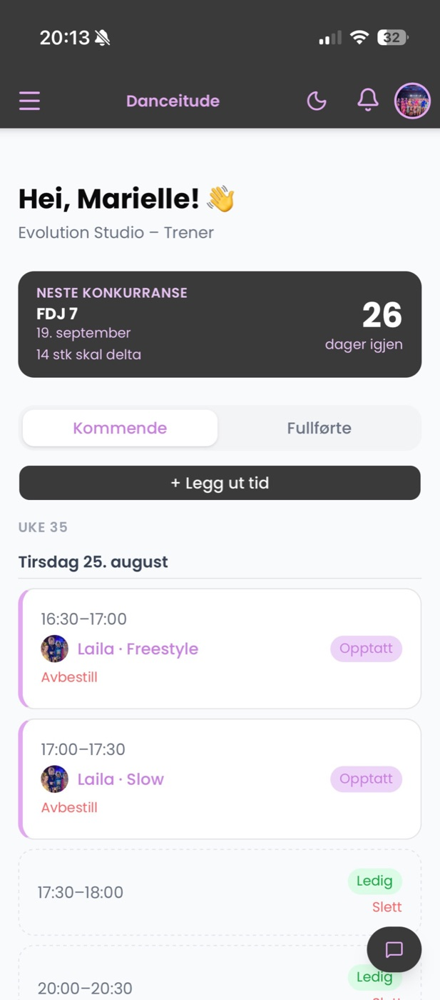

Danceitude – fra Google Docs til App Store
En bookingapp for privattimer i danseklubber. Jeg har gjort alt selv – fra å kartlegge behovene sammen med dansere, foreldre og trenere, til design, utvikling, lansering og videreutvikling.
- 200brukere
- 2danseklubber
- 3workshops med brukerne
- 1person bak alt
-
01 · Problem
Booking i Google Docs
Ledige timer i et delt dokument, avtaler i meldinger på tvers av apper. Dobbeltbookinger og lite oversikt.
-
02 · Workshop 1
Kartlegge behov
Dansere, foreldre og trenere i samme rom. De delte erfaringer og skisserte selv hvordan en bedre løsning skulle fungere.
-
03 · Prototype
Flyter i Adobe XD
23 skjermer fordelt på fire flyter: innlogging, bestilling, administrasjon av tider og avbestilling.
-
04 · Workshop 2
Teste prototypen
Brukerne testet en tidlig versjon. Innsikten: foreldre måtte bli en egen rolle – det er ofte de som booker. Noen funksjoner ble tatt ut.
-
05 · Utvikling
Bygget med KI
Jeg utviklet appen selv med KI-verktøy: tre roller, statuser, push-varsler, poeng, mål og konkurranser.
-
06 · Workshop 3
Teste ferdig produkt
Hele løsningen ble testet med brukerne og bekreftet at den løste problemene vi startet med.
-
07 · Lansering
App Store og 200 brukere
I bruk i Evolution Danseklubb og Trondheim Danseklubb. Jeg videreutvikler appen basert på tilbakemeldinger.

- Interaksjon
- Hver rolle – danser, forelder og trener – får sin egen startside og sine egne flyter. Tydelige statuser (ledig, opptatt), varsler når noe endrer seg, avbestilling direkte i appen og påminnelse om å bekrefte gjennomførte timer.
- Mitt bidrag
- Alt. Jeg planla og ledet workshopene, analyserte innsikten, laget informasjonsarkitektur, interaksjonsdesign og visuell profil, testet med brukerne, utviklet appen, publiserte den i App Store og laget nettsiden.
- Hva jeg lærte
- Å teste tidlig med alle brukergruppene sparte meg for å bygge feil ting. Uten workshop 2 hadde foreldrene – de som ofte booker og betaler – ikke hatt en plass i appen.
«Før måtte vi lete i Google Docs og sende meldinger for å finne ledige timer. Nå er alt i appen – det er bare å booke!»